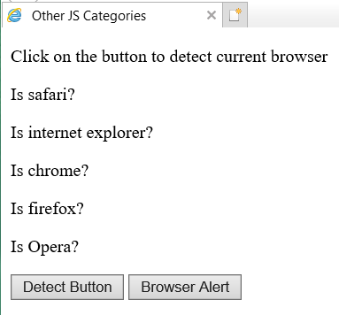
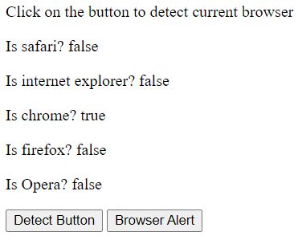

Browser Detection
The Browser Detection I implemented onto my website works differently for each web-browser as it detects the one the user is using and will output true and false, which will be different according to the engine the web-browser uses. For example: Microsoft Edge and Google Chrome both output Chrome due to using the same chromium search engine.
The issue I was experiencing was, in Internet Explorer 11, the browser detection was not working immediately when I clicked the button, whereas chrome and microsoft edge did work. Also my cookie was not working in internet explorer either/ did not pop up before the webpage was loaded. This is shown in the screenshots below, on the left is the issue in IE and on the right is shows the browser detection working correctly in Microsoft Edge.
 The reason why the browser detection and the cookie was not working on Internet Explorer was because the browser blocks running scripts and Active X Controls. So, you need to enable this to ensure both features of the webpage work correctly.

Below is the javascript code I used to create the browser detection:
function checkBrowser(){
let userAgentString= navigator.userAgent;
let chromeAgent = userAgentString.indexOf("Chrome")>-1;
let IExplorerAgent=userAgentString.indexOf("MSIE")>-1||
userAgentString.indexOf("rv:")>-1;
let firefoxagent=userAgentString.indexOf("Firefox")>-1;
let safariAgent=userAgentString.indexOf("Safari")>-1;
if((chromeAgent)&&(safariAgent)){
safariAgent=false;
}
let operaAgent=userAgentString.indexOf("OP")>-1;
if((chromeAgent)&&(operaAgent)){
chromeAgent=false;
}
document.querySelector(".output-safari").textContent=safariAgent;
document.querySelector(".output-chrome").textContent=chromeAgent;
document.querySelector(".output-ie").textContent=IExplorerAgent;
document.querySelector(".output-opera").textContent=operaAgent;
document.querySelector(".output-firefox").textContent=firefoxagent;
}
CSS code in Internet Explorer
Another example of code working differently on web-browsers is the way my website is rendered in Internet Explorer and Microsoft Edge. In IE not all of the CSS rules have been rendered onto my webpage, for example: the background of the webpage is white rather than black; the text of the header and navigation bar is black and not aqua. This is shown in the screenshots below:
The cause of this issue is that Internet Explorer only applies the first 31 style tags and 4,095 rules; if there are more than these numbers, they are not applied. Furthermore, if the an external CSS style sheet is more than "3 levels deep" it will be ignored.
Also Internet Explorer does not seem compatible with CSS variables, as the colours I stored under variable names do not appear. So in future if you were building a website just for IE, potentially avoid using variables for colours.
>Microsoft CSS page rendering issuesThere are two solutions for this issue, limit the amount of style rules and tags the website uses, which will make the webpages look incredibly basic and boring, which is what IE has done already, or the user will need to download a more up to date web-browser, such as Google Chrome or Microsoft Edge.
Here is some of the CSS code I used to create my Website/ webpages:
:root{
--main-bg-color:#0B0C10;
--txt-border-color:#66FCF1;
}
a.highlight:hover{
color: aqua;
}
code{
font-family: monospace;
color: chocolate;
}
*{
box-sizing: border-box;
}
.header{
background-color: var(--main-bg-color);
padding: 20px;
text-align: center;
}
h1{
color: var(--txt-border-color);
text-align: center;
font: bold 200% fantasy;
}